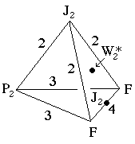
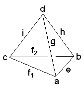

Underlying Topological Space: S3; Figure Pseudo-Symmetry (FPS): m
Euclidean 3-Orbifold with Invariant-Lattice-Complex Letters
(left), Wyckoff Site Letters (right)
 
| FPS | Mult | Lattice Comp | Group Graph | Wyckoff Set | 2[4]Cover |
| 4-2 | F | 432 | a, b | ||
| 8-1 | P2 | 332 | c | ||
| 24-1 | J2 | 222 | d | ||
| 24-1 | F6[J2]F6 | 32<4>32 | (e:a-b)1 | ||
| 32-2 | F8[-]P24 | 42<3>32 | (f1:a-c, f2:c-b)2 | ||
| 48-1 | P26[-]J22 | 33<2>22 | (i:c-d)3 | ||
| 48-2 | F12[-]J22 | 43<2>22 | g:a-d, h:b-d | ||
| 96 | 1 | j:efghi | |||
| 96-1 | J24[W*2]J24 | 2*=222<1>44 | (j1:d-e)4 | #207(h) | |
| 96-1 | P212[-]J24 | 2*=432<1>44 | j2:c-d | #226(h) | |
| 96-2 | m* | (j3:egh)5; (j4:if1f2egh)6 | #225(j,k) | ||
| m | 96-1 | m* | (j5:ij1j2)7 | #226(i) | |
| Struct-Mult | Critical Points | Heegaard Surf | Wyckoff Cut |
| NaCl-1 | FF/J2/J2/P2 | H3322{1} | f1 f2 h g |
| FCC -2 | FP2/3/J2/F | H4322{1} | e f2 i g; e f1 i h |
 208
208 210
210 Orbifold Atlas Home Page
Orbifold Atlas Home Page Crystallographic Topology Home Page
Crystallographic Topology Home Page